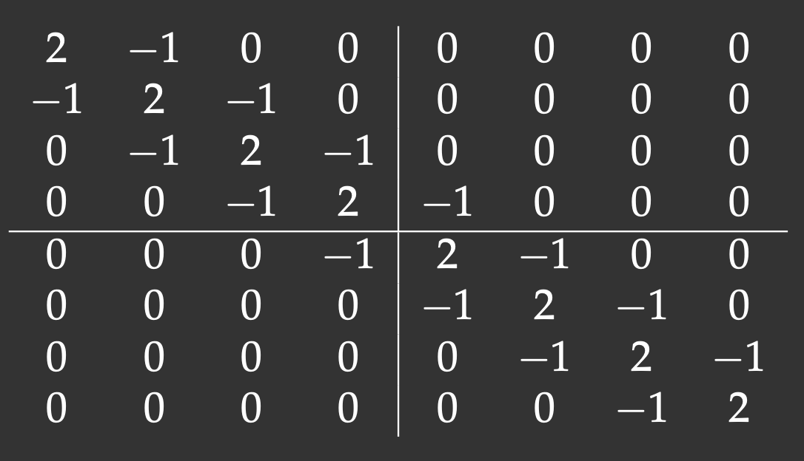

DistributedArrays.jl
DistributedArrays package provides DArray object that can be split across several processes (set of workers), either on the same or multiple nodes. This allows use of arrays that are too large to fit in memory on one node. Each process operates on the part of the array that it owns – this provides a very natural way to achieve parallelism for large problems.
- Each worker can read any elements using their global indices
- Each worker can write only to the part that it owns \(~\Rightarrow~\) automatic parallelism and safe execution
DistributedArrays is not part of the standard library, so – if running on your own computer – you would usually need to install it yourself:
] add DistributedArrays # typically installs into `~/.julia/environments/versionNumber`We have DistributedArrays already installed on our training cluster. To use it, we need to load this package on every worker:
using Distributed
addprocs(4)
@everywhere using DistributedArraysn = 10
data = dzeros(Float32, n, n); # distributed 2D array of 0's
data # can access the entire array
data[1,1], data[n,5] # can use global indices
data.dims # global dimensions (10, 10)
data[1,1] = 1.0 # error: cannot write from the control process!
@spawnat 2 data.localpart[1,1] = 1.5 # success: can write locally
dataLet’s check data distribution across workers:
for i in workers()
@spawnat i println(localindices(data))
endYou can assign localindices() output to variables:
rows, cols = @fetchfrom 3 localindices(data)
println(rows) # the rows owned by worker 3If we try to write into our distributed array on the control process, e.g. data[6,1] = 1, we’ll get an error! If we try @fetchfrom 3 data[6,1] = 1, most likely we get an error as well! The reason is that we can only write into:
data.localparton- its “owner” worker using
- local indices on this worker:
@everywhere function fillLocalBlock(data)
h, w = localindices(data) # global indices of locally stored elements
for iGlobal in h # or collect(h) to iterate through a vector
iLoc = iGlobal - h.start + 1 # convert to local units; always start from 1
for jGlobal in w # or collect(w) to iterate through a vector
jLoc = jGlobal - w.start + 1 # convert to local units; always start from 1
data.localpart[iLoc,jLoc] = iGlobal + jGlobal
end
end
endRunning on one worker:
data
@spawnat 2 fillLocalBlock(data)
data # filled the first block owned by worker 2Running on all workers:
for i in workers()
@spawnat i fillLocalBlock(data)
end
data # now the distributed array is filled
@fetchfrom 3 data.localpart # stored on worker 3
minimum(data), maximum(data) # parallel reductionOne-liners to generate distributed arrays:
a = dzeros(100,100,100); # 100^3 distributed array of 0's
b = dones(100,100,100); # 100^3 distributed array of 1's
c = drand(100,100,100); # 100^3 uniform [0,1]
d = drandn(100,100,100); # 100^3 drawn from a Gaussian distribution
d[1:10,1:10,1]
e = dfill(1.5,100,100,100); # 100^3 fixed valueYou can find more information about the arguments by typing ?DArray. For example, you have a lot of control over the DArray’s distribution across workers. Before I show the examples, let’s define a convenient function to show the array’s distribution:
function showDistribution(x::DArray)
for i in workers()
@spawnat i println(localindices(x))
end
endnworkers() # 4
data = dzeros((100,100), workers()[1:2]); # define only on the first two workers
showDistribution(data)square = dzeros((100,100), workers()[1:4], [2,2]); # 2x2 decomposition
showDistribution(square)slab = dzeros((100,100), workers()[1:4], [1,4]); # 1x4 decomposition
showDistribution(slab)You can take a local array and distribute it across workers:
e = fill(1.5, (10,10)) # local array
de = distribute(e) # distribute `e` across all workers
showDistribution(de)Using either top or htop command on the training cluster, study memory usage with DistributedArrays. Are these arrays really distributed across processes? Use a largish array for this: large enough to spot memory usage, but not too large not to exceed physical memory and not to affect other workshop participants.
Building a distributed array from local pieces 1
Let’s restart Julia with julia (single control process) and load the packages:
using Distributed
addprocs(4)
using DistributedArrays # important to load this after addprocs()
@everywhere using LinearAlgebraWe will define an 8x8 matrix with the main diagonal and two off-diagonals (tridiagonal matrix). The lines show our matrix distribution across workers:

Notice that with the 2x2 decomposition two of the 4 blocks are also tridiagonal matrices. We’ll define a function to initiate them:
@everywhere function tridiagonal(n)
la = zeros(n,n)
la[diagind(la,0)] .= 2. # diagind(la,k) provides indices of the kth diagonal of a matrix
la[diagind(la,1)] .= -1.
la[diagind(la,-1)] .= -1.
return la
endWe also need functions to define the other two blocks:
@everywhere function upperRight(n)
la = zeros(n,n)
la[n,1] = -1.
return la
end
@everywhere function lowerLeft(n)
la = zeros(n,n)
la[1,n] = -1.
return la
endWe use these functions to define local pieces on each block and then create a distributed 8x8 matrix on a 2x2 process grid:
d11 = @spawnat 2 tridiagonal(4)
d12 = @spawnat 3 lowerLeft(4)
d21 = @spawnat 4 upperRight(4)
d22 = @spawnat 5 tridiagonal(4)
d = DArray(reshape([d11 d12 d21 d22],(2,2))); # create a distributed 8x8 matrix on a 2x2 process grid
dAt this point, if you redefine showDistribution() (need to do this only on the control process!), most likely you will see no output if you run showDistribution(d). Any idea why?
Footnotes
This example was adapted from Baolai Ge’s (SHARCNET) presentation.↩︎